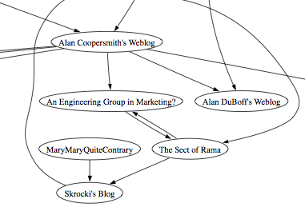

Mapping blogs.sun.com
Aardvark, our blog recommender that relies on Project Aura,
our web-scale recommender has a crawler that builds a link map so we
can derive the authority of a blog based upon the link structure of the
blogosphere. For fun, I built a link map of the top 60 or so most
linked blogs at blogs.sun.com. It is interesting to see all of the
connections, and of course Jonathan's is the most linked to blog of all. Here's an excerpt, the full version is pretty large. There's a totally hardcore PDF as well that shows the link structure for the top 200 blogs.

{kind=link}
(60 node PDF version)
(200 node PDF version)
Update: Henry Story points out some obvious, missing links - turns out we haven't crawled all of blogs.sun.com yet, so if your well connected blog is not in the map, it will be soon.
I think the crawler was a good metric a couple of years ago but I don't think it is as relevant today. The top 5 blogs at BSC right now are JimG, JIS, TA, Keving, and Geertjan. Kevin and Geertjan are not in your map and TA and JimG have very limited links.
Speaking for TA, I think people use it as a daily destination. They check it every day and they don't bother linking to it. It is also a news blog so they go use the references.
Anyhow, fwiw. - eduard/o
Posted by Eduardo Pelegri-Llopart on April 23, 2008 at 02:22 PM EDT #
Paul -- I love the 200-node version :) Finally! A network diagram that I can frame and hang on family room wall :)
Posted by Jen McGinn on April 23, 2008 at 04:19 PM EDT #